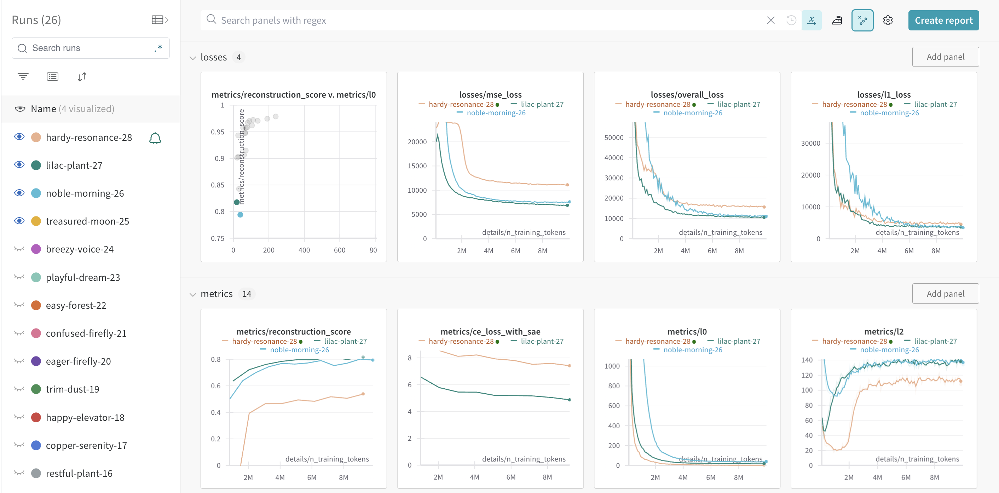

Training Sparse Autoencoders
Methods development for training SAEs is rapidly evolving, so these docs may change frequently. For all available training options, see LanguageModelSAERunnerConfig.
However, we are attempting to maintain this tutorial
 .
.
We encourage readers to join the Open Source Mechanistic Interpretability Slack for support!
Basic training setup
Training a SAE is done using the SAETrainingRunner class. This class is configured using a LanguageModelSAERunnerConfig, and has a single method, run(), which performs training.
Some of the core config options are below:
model_name: The base model name to train a SAE on. This must correspond to a model from TransformerLens.hook_name: This is a TransformerLens hook in the model where our SAE will be trained from. More info on hooks can be found here.dataset_path: The path to a dataset on Huggingface for training.hook_layer: This is an int which corresponds to the layer specified inhook_name. This must match! e.g. ifhook_nameis"blocks.3.hook_mlp_out", thenlayermust be3.d_in: The input size of the SAE. This must match the size of the hook in the model where the SAE is trained.expansion_factor: The hidden layer of the SAE will have sizeexpansion_factor * d_in.l1_coefficient: This controls how much sparsity the SAE will have after training.training_tokens: The total tokens used for training.train_batch_size_tokens: The batch size used for training. Adjust this to keep the GPU saturated.
A sample training run from the tutorial is shown below:
total_training_steps = 30_000
batch_size = 4096
total_training_tokens = total_training_steps * batch_size
lr_warm_up_steps = 0
lr_decay_steps = total_training_steps // 5 # 20% of training
l1_warm_up_steps = total_training_steps // 20 # 5% of training
cfg = LanguageModelSAERunnerConfig(
# Data Generating Function (Model + Training Distibuion)
model_name="tiny-stories-1L-21M", # our model (more options here: https://neelnanda-io.github.io/TransformerLens/generated/model_properties_table.html)
hook_name="blocks.0.hook_mlp_out", # A valid hook point (see more details here: https://neelnanda-io.github.io/TransformerLens/generated/demos/Main_Demo.html#Hook-Points)
hook_layer=0, # Only one layer in the model.
d_in=1024, # the width of the mlp output.
dataset_path="apollo-research/roneneldan-TinyStories-tokenizer-gpt2", # this is a tokenized language dataset on Huggingface for the Tiny Stories corpus.
is_dataset_tokenized=True,
streaming=True, # we could pre-download the token dataset if it was small.
# SAE Parameters
mse_loss_normalization=None, # We won't normalize the mse loss,
expansion_factor=16, # the width of the SAE. Larger will result in better stats but slower training.
b_dec_init_method="zeros", # The geometric median can be used to initialize the decoder weights.
apply_b_dec_to_input=False, # We won't apply the decoder weights to the input.
normalize_sae_decoder=False,
scale_sparsity_penalty_by_decoder_norm=True,
decoder_heuristic_init=True,
init_encoder_as_decoder_transpose=True,
normalize_activations="expected_average_only_in",
# Training Parameters
lr=5e-5,
adam_beta1=0.9, # adam params (default, but once upon a time we experimented with these.)
adam_beta2=0.999,
lr_scheduler_name="constant", # constant learning rate with warmup.
lr_warm_up_steps=lr_warm_up_steps, # this can help avoid too many dead features initially.
lr_decay_steps=lr_decay_steps, # this will help us avoid overfitting.
l1_coefficient=5, # will control how sparse the feature activations are
l1_warm_up_steps=l1_warm_up_steps, # this can help avoid too many dead features initially.
lp_norm=1.0, # the L1 penalty (and not a Lp for p < 1)
train_batch_size_tokens=batch_size,
context_size=256, # will control the lenght of the prompts we feed to the model. Larger is better but slower. so for the tutorial we'll use a short one.
# Activation Store Parameters
n_batches_in_buffer=64, # controls how many activations we store / shuffle.
training_tokens=total_training_tokens, # 100 million tokens is quite a few, but we want to see good stats. Get a coffee, come back.
store_batch_size_prompts=16,
# Resampling protocol
use_ghost_grads=False, # we don't use ghost grads anymore.
feature_sampling_window=1000, # this controls our reporting of feature sparsity stats
dead_feature_window=1000, # would effect resampling or ghost grads if we were using it.
dead_feature_threshold=1e-4, # would effect resampling or ghost grads if we were using it.
# WANDB
log_to_wandb=True, # always use wandb unless you are just testing code.
wandb_project="sae_lens_tutorial",
wandb_log_frequency=30,
eval_every_n_wandb_logs=20,
# Misc
device=device,
seed=42,
n_checkpoints=0,
checkpoint_path="checkpoints",
dtype="float32"
)
sparse_autoencoder = SAETrainingRunner(cfg).run()
As you can see, the training setup provides a large number of options to explore. The full list of options can be found in the LanguageModelSAERunnerConfig class.
Logging to Weights and Biases
For any real training run, you should be logging to Weights and Biases (WandB). This will allow you to track your training progress and compare different runs. To enable WandB, set log_to_wandb=True. The wandb_project parameter in the config controls the project name in WandB. You can also control the logging frequency with wandb_log_frequency and eval_every_n_wandb_logs.
A number of helpful metrics are logged to WandB, including the sparsity of the SAE, the mean squared error (MSE) of the SAE, dead features, and explained variance. These metrics can be used to monitor the training progress and adjust the training parameters. Below is a screenshot from one training run.

Checkpoints
Checkpoints allow you to save a snapshot of the SAE and sparsitity statistics during training. To enable checkpointing, set n_checkpoints to a value larger than 0. If WandB logging is enabled, checkpoints will be uploaded as WandB artifacts. To save checkpoints locally, the checkpoint_path parameter can be set to a local directory.
Optimizers and Schedulers
The SAE training runner uses the Adam optimizer with a constant learning rate by default. The optimizer betas can be controlled with the settings adam_beta1 and adam_beta2.
The learning rate scheduler can be controlled with the lr_scheduler_name parameter. The available schedulers are: constant (default), consineannealing, and cosineannealingwarmrestarts. All schedulers can be used with linear warmup and linear decay, set via lr_warm_up_steps and lr_decay_steps.
To avoid dead features, it's often helpful to slowly increase the L1 penalty. This can be done by setting l1_warm_up_steps to a value larger than 0. This will linearly increase the L1 penalty over the first l1_warm_up_steps training steps.
Datasets, streaming, and context size
SAELens works with datasets hosted on Huggingface. However, these datsets are often very large and take a long time and a lot of disk space to download. To speed this up, you can set streaming=True in the config. This will stream the dataset from Huggingface during training, which will allow training to start immediately and save disk space.
The context_size parameter controls the length of the prompts fed to the model. Larger context sizes will result in better SAE performance, but will also slow down training. Each training batch will be tokens of size train_batch_size_tokens x context_size.
It's also possible to use pre-tokenized datasets to speed up training, since tokenization can be a bottleneck. To use a pre-tokenized dataset on Huggingface, update the dataset_path parameter and set is_dataset_tokenized=True in the config.
Pretokenizing datasets
We also provider a runner, PretokenizeRunner, which can be used to pre-tokenize a dataset and upload it to Huggingface. See [PretokenizeRunnerConfig][sae_lens.PretokenizeRunnerConfig] for all available options. We also provide a pretokenizing datasets tutorial with more details.
A sample run from the tutorial for GPT2 and the NeelNanda/c4-10k dataset is shown below.
from sae_lens import PretokenizeRunner, PretokenizeRunnerConfig
cfg = PretokenizeRunnerConfig(
tokenizer_name="gpt2",
dataset_path="NeelNanda/c4-10k", # this is just a tiny test dataset
shuffle=True,
num_proc=4, # increase this number depending on how many CPUs you have
# tweak these settings depending on the model
context_size=128,
begin_batch_token="bos",
begin_sequence_token=None,
sequence_separator_token="eos",
# uncomment to upload to huggingface
# hf_repo_id="your-username/c4-10k-tokenized-gpt2"
# uncomment to save the dataset locally
# save_path="./c4-10k-tokenized-gpt2"
)
dataset = PretokenizeRunner(cfg).run()
Caching activations
The next step in improving performance beyond pre-tokenizing datasets is to cache model activations. This allows you to pre-calculate all the training activations for your SAE in advance so the model does not need to be run during training to generate activations. This allows rapid training of SAEs and is especially helpful for experimenting with training hyperparameters. However, pre-calculating activations can take a very large amount of disk space, so it may not always be possible.
SAELens provides a CacheActivationsRunner class to help with pre-calculating activations. See CacheActivationsRunnerConfig for all available options. This runner intentionally shares a lot of options with LanguageModelSAERunnerConfig. These options should be set identically when using the cached activations in training. The CacheActivationsRunner can be used as below:
from sae_lens import CacheActivationsRunner, CacheActivationsRunnerConfig
cfg = CacheActivationsRunnerConfig(
model_name="tiny-stories-1L-21M",
hook_name="blocks.0.hook_mlp_out",
dataset_path="apollo-research/roneneldan-TinyStories-tokenizer-gpt2",
# ...
new_cached_activations_path="./tiny-stories-1L-21M-cache"
)
CacheActivationsRunner(cfg).run()
To use the cached activations during training, set use_cached_activations=True and cached_activations_path to match the new_cached_activations_path above option in training configuration.